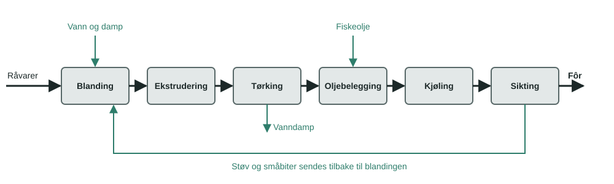

Hva kan du nå?
Dette er siste steg i emnet «Blokkskjema». Gå gjennom sjekklisten, les blokkskjemaet og svar på quizen, og tegn et blokkskjema selv. Står du fast, går du tilbake til siden det gjelder.
Sjekkliste
- Jeg kan forklare hva et blokkskjema er, og hva det brukes til.
- Jeg vet hva en boks og en pil betyr.
- Jeg kan finne råstoff, produkt, tilsetninger og avfall i et blokkskjema.
- Jeg kan kjenne igjen resirkulering i et blokkskjema.
- Jeg vet hva et blokkskjema ikke viser.
- Jeg kan reglene for å tegne et blokkskjema.
- Jeg kan tegne et blokkskjema ut fra en beskrivelse av en prosess.
Les blokkskjemaet
Figuren viser et blokkskjema for en fabrikk som lager fiskefôr. Fôret er små, harde kuler, såkalte pellets. Bruk figuren når du svarer på quizen.

Quiz
1. Hva er produktet i fabrikken?
- Fiskeolje
- Fôr
- Vanndamp
Produktet kommer ut til høyre, ved enden av hovedstrømmen. Her er det fôr.
2. Hva tilsettes underveis i prosessen?
- Vann og damp, og fiskeolje
- Vanndamp og støv
- Bare råvarer
Det som tilsettes, kommer inn ovenfra: vann og damp i blandingen og fiskeolje i oljebeleggingen.
3. I hvilket trinn går det vanndamp ut av prosessen?
- Blanding
- Tørking
- Kjøling
Pila med vanndamp går ut nedover fra tørkingen. Der blir vannet fra blandingen tatt ut igjen.
4. Hva viser pila fra siktingen tilbake til blandingen?
- At fôret er ferdig
- At siktingen sender avfall ut av fabrikken
- At støv og småbiter blir brukt på nytt (resirkulering)
En pil bakover betyr resirkulering. Biter som er for små, blandes inn igjen i stedet for å bli kastet.
5. Hvor mange trinn har prosessen?
- Fire
- Seks
- Åtte
Hver boks er ett trinn. Det er seks bokser: blanding, ekstrudering, tørking, oljebelegging, kjøling og sikting.
6. Du vil vite hvor ventilen foran tørkeren står. Finner du det i dette skjemaet?
- Ja, ventiler står ved pilene
- Nei, du må se i det tekniske flytskjemaet (P&ID)
- Ja, ventiler står inne i boksene
Et blokkskjema viser bare trinn og strømmer. Ventiler, rør og målere står i det tekniske flytskjemaet.
Tegn selv: saltverket
Les teksten og tegn et blokkskjema på papir. Følg reglene fra Tegn et blokkskjema.
Et saltverk lager salt av sjøvann. Sjøvannet pumpes inn og filtreres, og sand og alger går ut som avfall. Så varmes vannet opp i en inndamper, slik at vann damper av og salt blir igjen som krystaller. Saltkrystallene skilles fra resten av væsken i en sentrifuge. Væsken sendes tilbake til inndamperen. Til slutt tørkes saltet og pakkes.
Fasit
Et mulig blokkskjema har fem bokser på rad:
Filtrering → Inndamping → Sentrifugering → Tørking → Pakking
- Inn til venstre: sjøvann.
- Ut til høyre: salt (produkt).
- Ut nedover: sand og alger fra filtreringen, og vanndamp fra inndampingen. (Vanndamp fra tørkingen kan også tas med.)
- Resirkulering: en pil bakover fra sentrifugeringen til inndampingen med væsken som blir igjen.
Det er greit om boksene dine heter litt annerledes, så lenge rekkefølgen og strømmene stemmer. Sjekk at alle pilene har navn, og at linjene ikke krysser hverandre.
Forklar med egne ord
Svar før du åpner forslaget.
1. Du begynner i jobb på et nytt anlegg. Hvorfor er det lurt å se på blokkskjemaet først?
Blokkskjemaet gir oversikt over hele prosessen på én side. Jeg ser hvilke trinn anlegget har, hva som går inn og ut, og hvordan trinnene henger sammen. Når jeg har oversikten, er det lettere å forstå de detaljerte skjemaene.
2. Hva er forskjellen på et blokkskjema og et teknisk flytskjema (P&ID)?
Et blokkskjema viser bare trinnene og strømmene mellom dem. Et teknisk flytskjema viser alt utstyret, med rør, ventiler og instrumenter, tegnet med faste symboler.
3. Hvorfor tegner vi resirkulering som en pil bakover?
Fordi stoffet går tilbake til et tidligere trinn i prosessen. Når hovedstrømmen går fra venstre mot høyre, viser en pil mot venstre at noe sendes tilbake og brukes på nytt.
Les mer
Om kildene: Teksten, spørsmålene og figurene på denne siden er laget for dette nettstedet. Siden bygger på undervisningsopplegg i kjemiprosess- og laboratoriefag ved Sauda vgs, som er utarbeidet med utgangspunkt i blant annet Kjemien stemmer, Laboranten og åpne nettkilder.